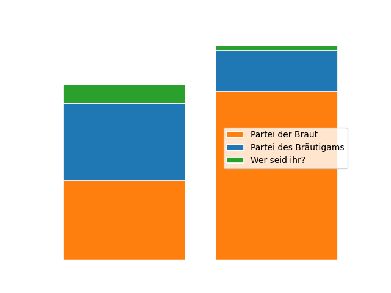
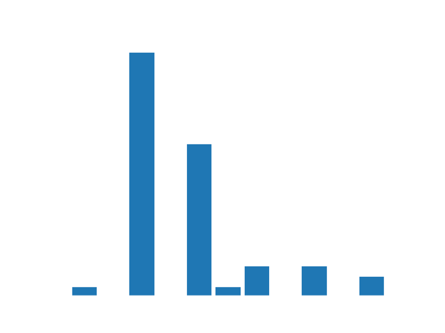

Dieses Ergebnis erstaunt - so viele können es gar nicht gewusst haben.

Ich wusste gar nicht, dass ihr verlobt seid.
K-Frage
Ich wünsche mir Angela Merkel zurück.
Wahlbeteiligung
Eine Wahlbeteiligung von 95% steht für nahezu russische Verhältnisse.
Ich / Wir kommen zur Hochzeit.
Gemeinschaftsförderung
Aus Kosten- und Umweltschutzgründen wurde bei dieser Wahl
ein einziger Stimmzettel pro Haushalt ausgestellt.
Wir hoffen, dass dieses Modell Schule macht,
damit Wahlen in Zukunft unmittelbar, frei, gleich und gemeinschaftlich sind.
Wie groß die jeweilige Wahlgemeinschaft war, zeigt dieser Graph.

Ich / Wir nehmen mit ... Personen teil.
Wahlbezirke
Die Karte zeigt die Herkunftsorte unserer Gäste.
Die Angaben sind nicht auf die Adresse genau.